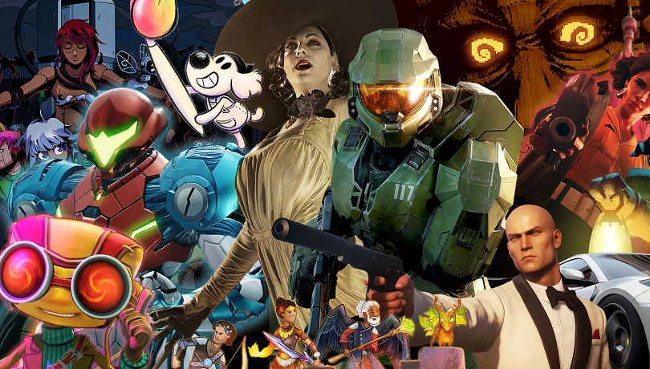

● Jocurile video
Termenul joc pe calculator sau "joc pe PC" se referă la un joc care este jucat pe un PC, unde monitorul este principalul mijloc de feedback și care folosește ca dispozitiv de control un periferic de intrare, de obicei butonarea unui joystick (jocuri din arcade-uri), o combinație tastatură - mouse/trackball sau un controller, ori o combinație dintre cele de mai sus. Jocuri pe calculator sunt denumite și jocurile în mod text sau jocuri care folosesc și alte metode care includ sunetul sau vibrația ca principalul mijloc de feedback, dar in momentul actual apar prea puține jocuri noi care intră în aceste categorii.
Jocurile video sunt definite pe baza platformei lor, care includ jocuri video arcade, jocuri pe consolă și jocuri pe computer personal (PC). Mai recent, industria s-a extins la jocurile mobile prin smartphone-uri și tablete, sisteme de realitate virtuală și augmentată și jocuri în cloud la distanță. Jocurile video sunt clasificate într-o gamă largă de genuri în funcție de tipul de joc și scopul lor.
 |
Clasificarea jocurilor video
Un joc video, ca majoritatea celorlalte forme de media, poate fi clasificat în genuri. Cu toate acestea, spre deosebire de film sau televiziune care utilizează elemente vizuale sau narative, jocurile video sunt, în general, clasificate în genuri în funcție de interacțiunea lor în joc, deoarece acesta este mijlocul principal prin care afectează cu un joc video. Setarea narativă nu are impact asupra jocului; un joc cu împușcături este tot un joc cu împușcături, indiferent dacă are loc într-o lume fantastică sau în spațiul cosmic. O excepție este genul jocurilor de groază, folosit pentru jocurile care se bazează pe elemente narative ale ficțiunii horror, supranaturalul și groază psihologică.
Numele genurilor se autodescriu în mod normal în ceea ce privește tipul de joc, cum ar fi jocul de acțiune, jocul de rol sau shoot 'em up, deși unele genuri au derivate din lucrări influente care au definit acel gen, cum ar fi roguelike-urile din Rogue, Clonele Grand Theft Auto, Grand Theft Auto III și jocurile Battle Royale. Numele se pot schimba în timp pe măsură ce jucătorii, dezvoltatorii și mass-media vin cu termeni noi; de exemplu, împușcăturile la persoana întâi au fost numite inițial „clone Doom”, bazate pe jocul din 1993. Există o ierarhie de genuri de joc, cu genuri de nivel superior, cum ar fi „joc cu împușcături” și „joc de acțiune”, care surprind în linii mari stilul de joc principal al jocului și mai multe subgenuri de implementare specifică, cum ar fi în cadrul jocului de împușcături împușcături la persoana întâi și a treia. - împușcător de persoane. Există, de asemenea, unele tipuri de genuri care se încadrează până la mai multe genuri de nivel superior, cum ar fi jocul de acțiune și aventură.
Modul de joc video descrie câți jucători pot folosi jocul la același tip. Acest lucru se distinge în primul rând prin jocurile video cu un singur jucător și jocurile video multiplayer. În cadrul acestei din urmă categorii, jocurile multiplayer pot fi jucate într-o varietate de moduri, inclusiv local pe același dispozitiv, pe dispozitive separate conectate printr-o rețea locală, cum ar fi LAN parties, sau online prin conexiuni separate la Internet. Majoritatea jocurilor multiplayer se bazează pe un joc competitiv, dar multe oferă opțiuni de cooperare și de echipă, precum și un joc asimetric. Jocurile online folosesc structuri de server care pot permite, de asemenea, jocuri online multiplayer masiv (MMO) să sprijine sute de jucători în același timp.
Industria jocurilor video
În ultimii ani, industria jocurilor video a crescut de la piețe concentrate la mainstream. Începând cu iulie 2018, jocurile video au generat vânzări de 134,9 miliarde USD anual în întreaga lume. În SUA, a încasat aproximativ 9,5 miliarde USD în 2007, 11,7 miliarde în 2008 și 25,1 miliarde în 2010, conform raportului anual ESA.
Calculatoarele personale moderne datorează multe progrese și inovații industriei jocurilor: plăcile de sunet, plăcile grafice și acceleratoarele grafice 3D, procesoarele mai rapide și coprocesoarele dedicate precum PhysX sunt câteva dintre îmbunătățirile mai notabile. De exemplu, au fost dezvoltate inițial pentru adăugarea de sunet de calitate digitală la jocuri și abia mai târziu au fost îmbunătățite pentru industria muzicală. Plăcile grafice au fost dezvoltate inițial pentru a oferi mai multe culori pentru ecran; iar mai târziu pentru a suporta interfețe grafice de utilizator (GUI) și jocuri. Acest lucru a determinat nevoia de rezoluții mai mari și accelerare 3D.
În timp ce o nouă generație de console de acasă, Xbox Series X/S și PlayStation 5, a fost planificată în 2020, industria jocurilor video a fost afectată de pandemia COVID-19, care a avut un impact la nivel mondial începând din martie 2020 din cauza rămânerii forțate la comenzi la domiciliu prin reglementări guvernamentale. Deși au existat impacturi similare asupra industriei jocurilor video ca și în cazul altor industrii, cum ar fi anularea expozițiilor, convențiilor și evenimentelor de esports și întârzierea multor jocuri până la sfârșitul anului 2020, 2021 sau mai departe, industria a fost, de asemenea, una dintre puținii care au prosperat de fapt din oamenii blocați acasă, folosind jocurile video ca mijloc de a depăși distanțarea socială. Piața a avut o creștere de 20% de la an la an din 2019, ajungând la peste 179 de miliarde de dolari în venituri globale atât din hardware, cât și din software pentru 2020. Jocurile simplu de învățat cu interacțiuni sociale ridicate și-au găsit o popularitate ridicată în timpul pandemiei de COVID-19, inclusiv Animal Crossing: New Horizons, Fall Guys și Among Us.
Pe măsură ce pandemia a continuat din 2020 până în 2021, industria a fost afectată de un efect secundar al COVID-19, impactul deficitului global de cipuri semiconductoare asupra producției de hardware. Toți cei trei furnizori de console, Nintendo, Microsoft și Sony, au fost afectați de disponibilitatea aprovizionării cu componente de bază și, pentru ultimii doi, au făcut lansarea noilor lor console dificil de gestionat, având doar consumabile limitate disponibile la lansare. Lipsa aprovizionării cu cipuri a afectat, de asemenea, jucătorii de computere personale, împreună cu cererea de piese de computer pentru a fi utilizate în minerit de criptomonede, ceea ce a crescut artificial prețurile și a îngreunat achiziționarea de componente mai noi.
|  |
 |